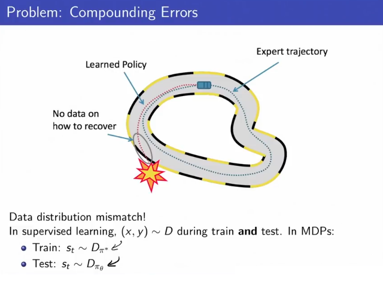
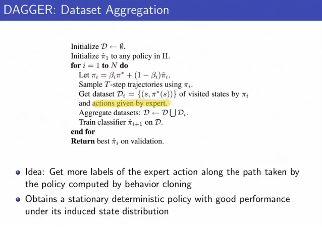
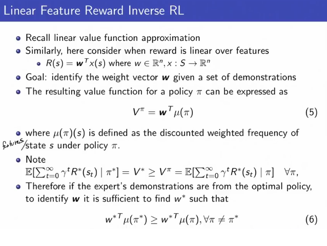
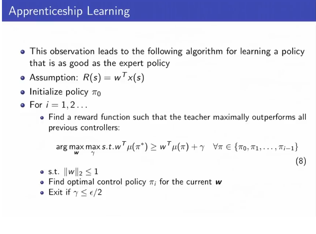
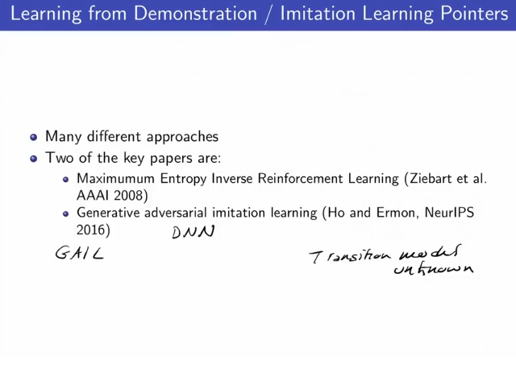

Imitation Learning - Learning from Demonstrations (Mostly Applications in Driving and Robotics). Why Imitation Learning? Data Efficiency: How much data is needed to learn good decisions.
Input:
(Appendix 1)
Behavorial Cloning: Formulate problem as a standard supervised machine learning problem, fixing a policy class (e.g. neural network). Estimate a policy from training examples
Supervised learning assumes iis (s,a) pairs and ignores temporal structure. Errors are independent in time.
Problem: Compunding Errors.
We will compund errors because the distribution of actions taken is different from distribution of training data. i.e. if the teacher data has "go right" in a particular situation, but our supervised learner made an error and went "left", now all the current state distribution is something that we have not seen before and is not the same as the training distrbution. In a paper it was proved that the error at time
This leads to the situation pictured in Appendix 1.
Do behavorial cloning (supervised learning), but when you hit a situation that you haven't seen before in the dataset, ask an in-the-loop expert what to do, and add that datapoint to your dataset. Grow dataset constantly using explored states and expert-given actions.
Pseudocode: (Appendix 1)
Initialize dataset to be empty.
Initialize the current learned policy
Loop until done:
Everything that you train the dataset on is with an expert label, and you slowly grow the size of that dataset.
DAGGER has good convergence properties. Requires a constantly in-the-loop expert, so its hard to scale up.
Can we recover
Given: State space
Goal: Infer the reward function
Note: Compatible reward functions to the action state are not unique.
Note: Can be extended to situations where the transition model is unknown, but requires access to a simulator.
Feature Matching
Feature Matching is one way to do linear feature reward inverse RL. Note that this is not an algo that a lot of people use anymore, most people use deep learning.
We model the reward as a linear function of the features:
Goal: Identify the weight vector
The resulting value function for a policy
where
So now instead of thinking about reward functions, we can start thinking about different distributions of states, which in a linear assumption is isomorphic to differnet reward functions. (Appendix 2)
Now, assuming we have the optimal reward function, the value function using
thus if the expert's demonstrations are from the optimal policy to identify
Finally, (Abel and Ng 2004), if for some policy its distribution of states matches the distribution of states of the expert, formally if
We don't know what the real reward policy, but we found the optimal policy, so that's good enough. Finding such a policy that matches state feature distributions with the teacher policy is called feature matching.
There are also non-linear analogs.
The above ovservation led to the Apprenticeship Learning Algorithm. Note that this is not an algo that a lot of people use anymore, most people use deel learning.
You try to find a reward function (a set of weights) such that the teacher policy looks better than every other policy. Still assumes
Pseudocode:
Initialize policy
Iterate over possible policies
Find a reward function
Find optimal control policy
Exit if a policy has been found that makes
Issues with Apprenticeship Learning
If expert policy is suboptimal then the resulting policy is a mexture of somewhat arbitrary policies which have expert in the convex hull. It's a bit tricky how to combine these. In practice: pick the best one of this set and pick the corresponding reward function.
Amiguity
There is an infinite number of reward functions with the same optimal policy. Two papers (Appendix 3)
If you want to get the actual reward function, you have to take a Bayesian Approach and specify a prior over reward functions, which you will then update with algos. If its not so important what the actual reward function is, you can just use the methods above.
Summary:
Imitation learning can greatly reduce the amount of data needed to learn a good policy. It is really useful practically in industry, Challenges remain and one exciting area is combining inverse RL / learning from demonstration and online reinforcement learning.
Appendix 1: Behavorial Cloning
Two notable success stories:
Pomerleau, NIPS 1989 (ALVINN - very early paper about driving on the road.)
Summut et al 1992 Flight Simulator
For behaviorial cloning, analysis of compounding errors

Pseudocode for DAGGER (Expert-in-the-loop Data Aggregation):

Appendix 2: Inverse RL: Feature Mapping and Apprenticeship Learning

Appendix 3:
